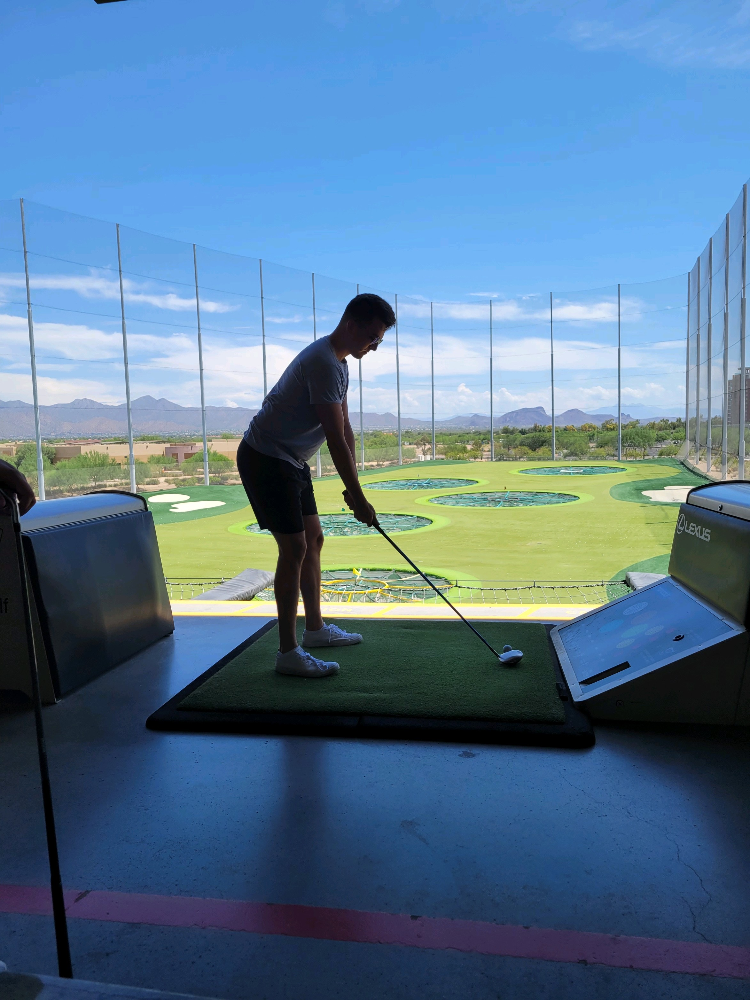
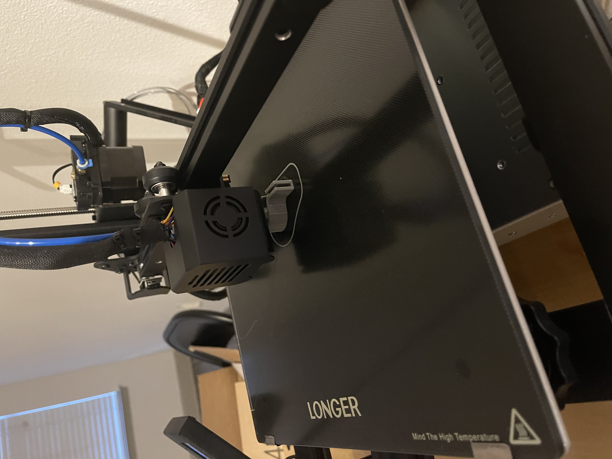
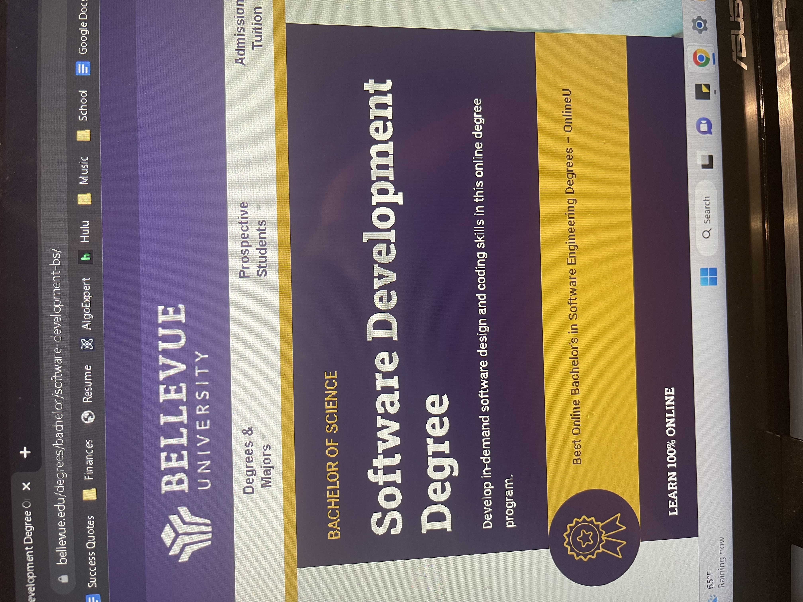

Isaac Frett
Hobbies
Golfing
I really enjoy golfing as it’s something fun to do with friends or family. I’m not very good at it but I enjoy when I am having my moments of professionalism. The picture above was taken at Top Golf in Arizona which is one of my favorite locations as you can see the mountains in the background as you hit. Now I go to the Charlotte NC location if I want to hit some balls. I look forward to getting my own clubs at some point.
3D Printing
I recently have gotten into 3D printing and designing objects on a design software on my computer. I find it really fun to devise ways to create things and go through the whole design process from start to finish in order to build something of use. So far I’ve printed a hook for my closet so that I have a place to hang my robe. I also printed a bathroom organizer that I designed in order to fit things I normally place on my countertop.
Zeus

I always enjoy spending time with my dog Zeus, I’ve had him since high school and he’s crazy with energy. He is definitely spoiled and he knows it too from how many toys I have bought him through the years, but how could you not spoil a face like that. Unfortunately I’ve been away from him for a while since moving to Charlotte NC but I look forward to seeing him again when I can fly back home to Iowa.
Expierence
Lowe's

As I mentioned before, I currently work at Lowe’s in North Carolina at their tech hub building pictured above. I’ve been working there for two months now as an associate software developer and have been loving it! I’ve learned a lot in my time there that carries over to school and vice versa. I foresee myself working there for awhile and I’m hoping to transition to remote so I can move back to Iowa to be around family.
School
School has taught me alot for my career in software development and thanks to Lowe’s they have provided assistance for me to come to Bellevue and enroll in this program. I’ve learned a lot about software development from being on the job at Lowe’s as well and I think both my work and school have helped one another tremendously.
Personal Projects

Aside from work and school I enjoy working on personal projects that help me be better at writing code and being able to be better at my craft. In the picture above I made a web app with both front end and back end that allows users to login and be placed in a waiting queue for help from a store. There is another login for employees to go into the app and respond to those in the customer queue.